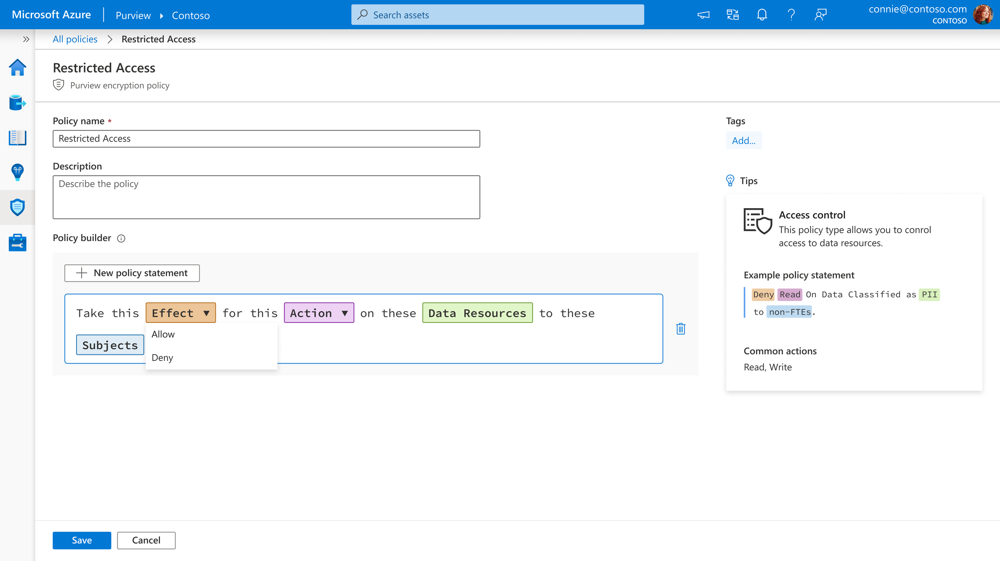
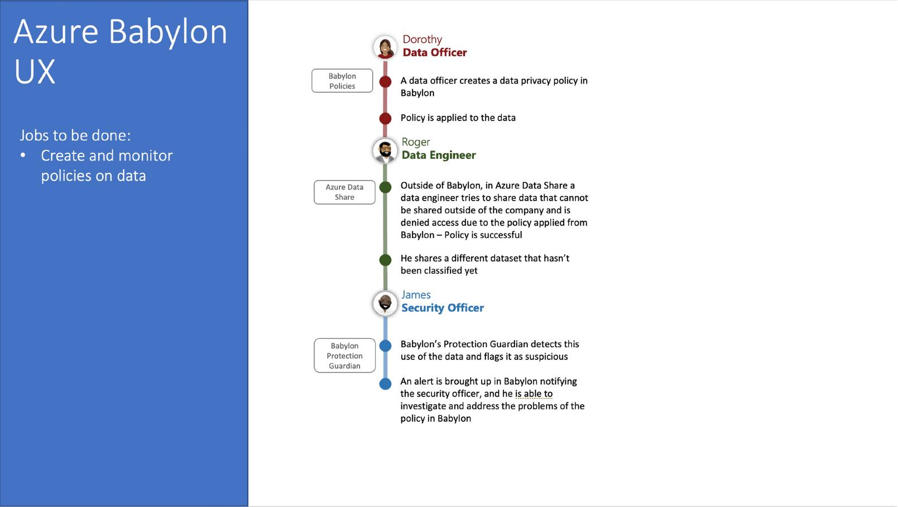
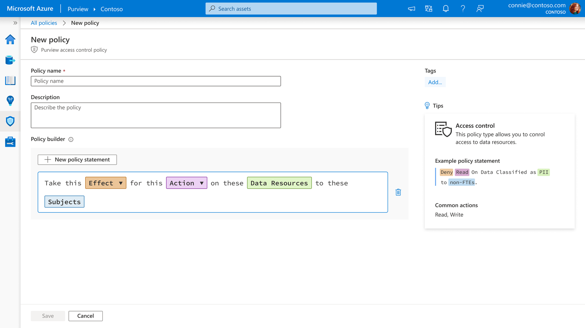
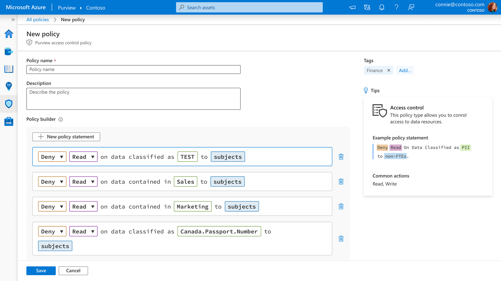
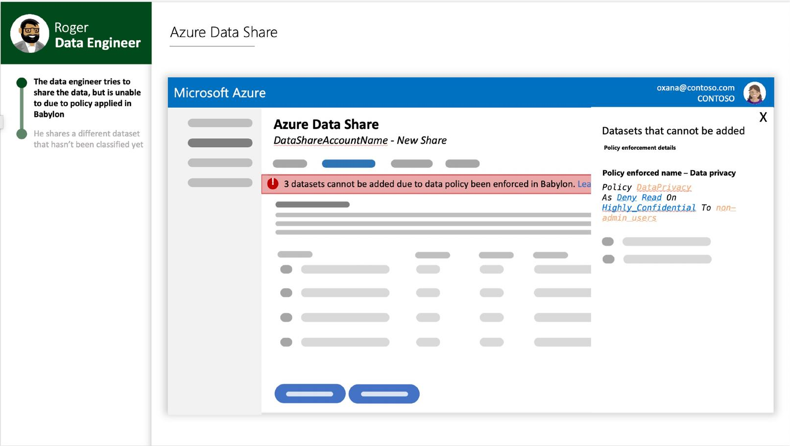
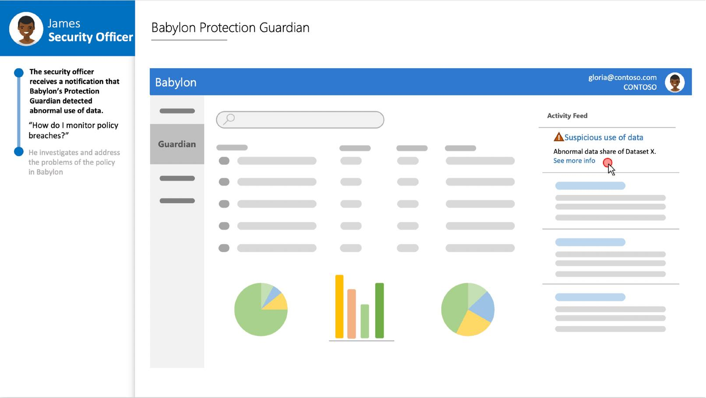
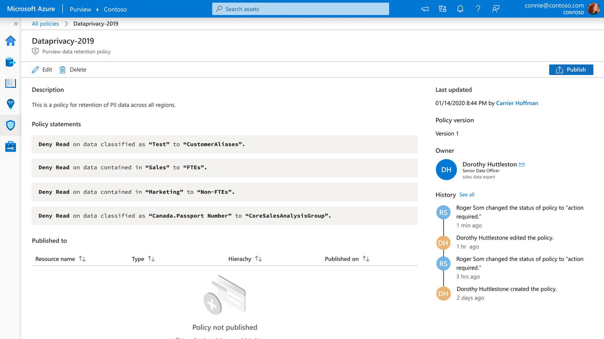

2019 – 2021 · Azure Purview
2019 – 2021 · Azure Purview
Azure Purview · Data Governance & Policy · Launch Dec 2020

The Problem
As Azure Purview matured, cataloging alone stopped being enough. Users could finally find and understand their data estate — but they still had no easy way to act on what they found. The design challenge shifted from helping people see their data to helping them govern it, without requiring them to become data governance specialists to do so.
No single Microsoft product could yet answer questions like "Is our data use compliant with GDPR?", "Who accessed sensitive data and what happened?", or "How do we prevent improper data sharing?" — and no established UX pattern existed for a platform that combined cataloging with active policy enforcement. Project Babylon was the answer.
My Role
I joined the core Babylon UX team as part of a small founding design group. I took lead ownership of the policy management and compliance monitoring scenarios — the part of Purview that would help organisations define, enforce, and investigate data governance policies. I co-authored the High-Level Scenario deck that became the team's guiding design artifact, and delivered the interactive prototypes that shaped the product roadmap presented at launch.
Babylon wasn't a single deliverable but an umbrella effort spanning several years and multiple parallel workstreams — including the privacy and consent management module that would later launch as Microsoft Priva.
Origin
Research/input. The team started with "Jobs to Be Done" narratives across three core personas — Data Officer, Data Engineer, Security Officer — rather than designing features in isolation. Across our broader customer research, one finding held regardless of company size: data governance teams were chronically underfunded, and it was common for one person to be covering multiple roles at once.
Insight. The people responsible for writing these policies weren't untrained in data governance broadly — many held titles like Data Officer and understood their organisation's data well. But they weren't legal specialists: holding responsibility for GDPR or CCPA compliance is different from being trained in GDPR or CCPA itself. That gap — real governance ownership without regulatory expertise — is what made simplicity and comprehensibility non-negotiable. A data officer needed to be able to write a policy correctly, and see plainly what it would actually do, without needing a law degree to do either.
Decision. Rather than exposing the underlying technical config directly, I designed a guided policy builder that reads like a sentence — but is composed from structured, guided selections, not free text. "Take this Effect for this Action on these Data Resources to these Subjects" — every word a discrete, constrained choice, so a policy could be authored and understood at a glance without requiring engineering or legal training to get right.

The original Jobs to Be Done journey — Dorothy creates a policy, Roger's attempt to share protected data is blocked by it, James investigates the resulting alert. This single narrative arc across three personas shaped every screen that followed.
Design Process — Content Design as the Core Discipline
The broader focus throughout was precise, high-scrutiny content design: every label and word in the policy builder had to carry exact technical meaning while staying readable to someone who wasn't a specialist. One clear example of that bar in practice — the fields now labeled "Data Resources" and "Subjects" went through several rounds of renaming after user testing. Wording that read as perfectly clear during design turned out to confuse real users, partly because the industry's own governance terminology was shifting at the time. Getting to language people actually recognised took multiple passes, and it set the standard of scrutiny applied to every other label in the builder.
An early template mockup — the sentence-as-config pattern in its first form, built around a single GDPR template rather than a general-purpose builder.

The shipped, general-purpose Policy Builder — the same sentence-based mechanism, generalised from one fixed template into a flexible statement anyone could compose.

The builder in use — four policy statements composed from the same guided structure, each still readable as a plain sentence.
Designing the Policy Lifecycle
Automatic enforcement. The storyboard showed what happens when a Data Engineer attempts to share protected data externally via Azure Data Share — the policy intercepts the action and blocks it with a clear explanation of which policy applied and why. Designing this enforcement moment — what it looks and feels like when a policy actually does its job — was new UX territory with no existing pattern to borrow from.
Detection and investigation. If data outside a policy's scope is shared unexpectedly, a Security Officer receives an alert. I designed the Activity Feed and Alert Detail view to be contextual, not just informational — showing which dataset, which user, which policy was relevant, and what actions were available, with a full activity log and recommended next steps.

Enforcement, storyboarded — a data engineer's share attempt blocked in-line, with a link to see exactly which policy caused it.

Detection, storyboarded — the loop closing: a blocked share attempt still surfaces as a flagged event for a security officer to review.
Shaping the Product Roadmap
The scenarios I designed illuminated the importance of data policies at a time when Purview's initial scope was focused primarily on scanning and cataloging. Microsoft's public launch messaging at Purview's December 2020 preview echoed the scenario almost verbatim, naming governance policies as the natural next step — "as simple as setting a policy in Purview."
By the time Purview reached general availability, it included data classification and labelling, alert integration with Microsoft's security stack, and data risk insights for security officers — all directly tracing back to the design directions established in 2019–2020.
Outcome
Azure Purview launched in public preview in December 2020, and was received as a meaningful usability improvement over its predecessor. The compliance and policy narrative established in Babylon became the foundation Purview grew on — eventually evolving into the broader Microsoft Purview suite that now underpins the company's entire data security portfolio.

A completed policy in its detail view — plain-language statements, ownership, and full edit history, so accountability for a powerful action stays traceable.